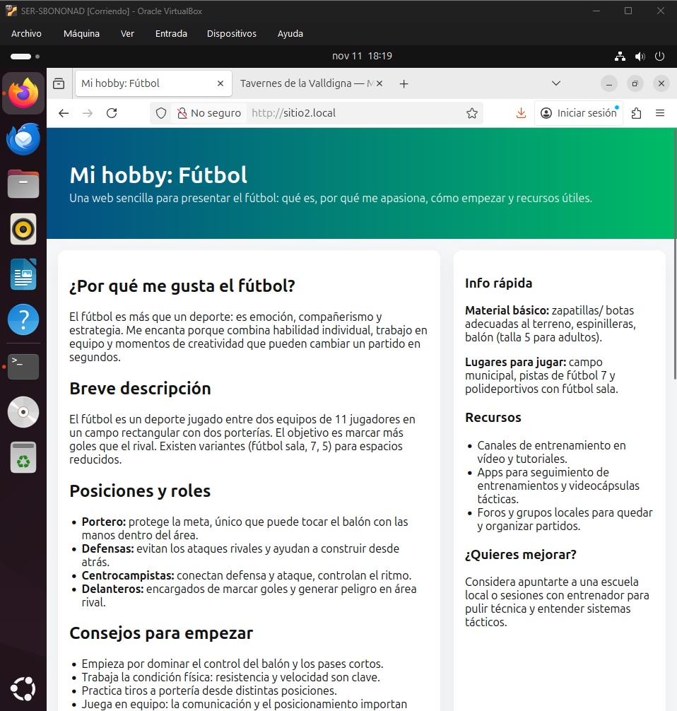
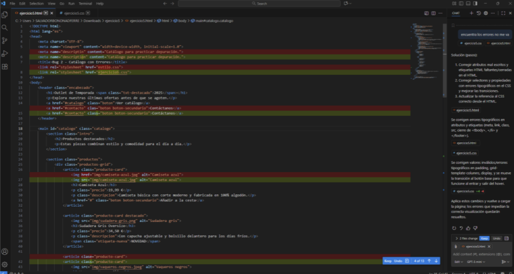
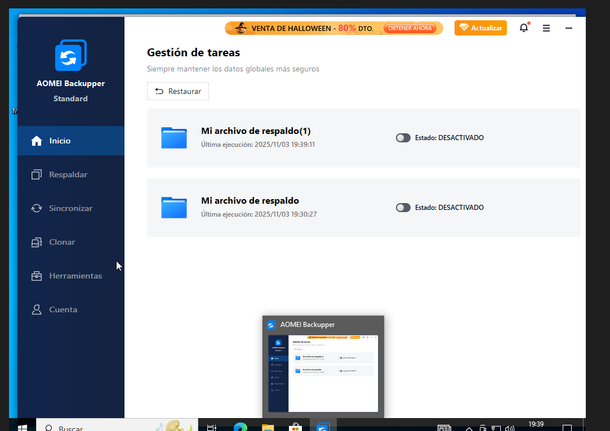
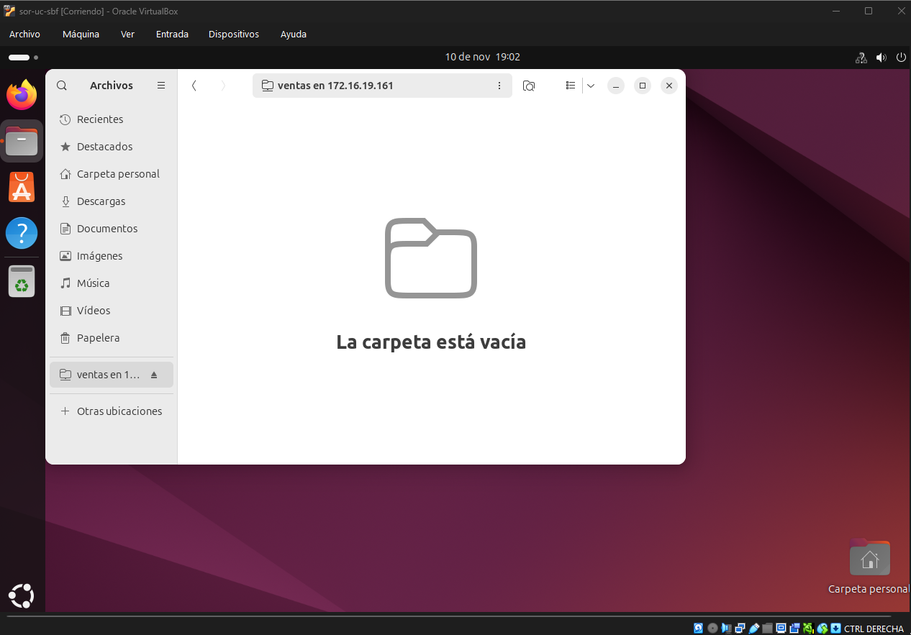
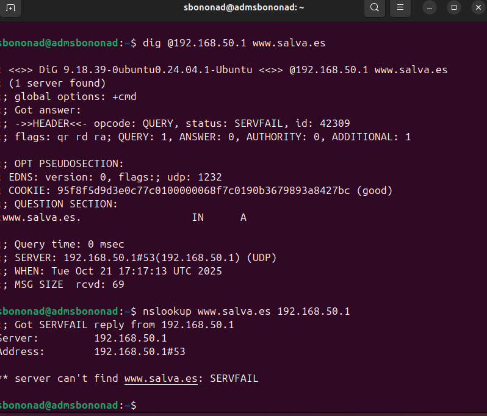
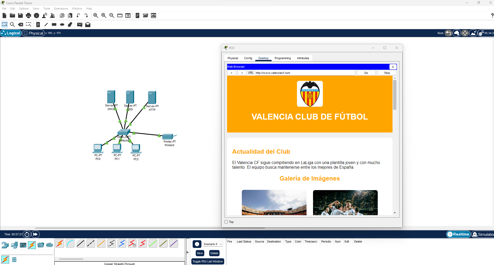

Sobre Mí
Soy Técnico en Sistemas Microinformáticos y Redes (SMR) con pasión por la tecnología y el desarrollo web. Me defino como un perfil versátil: disfruto tanto montando infraestructuras y redes como maquetando interfaces accesibles. Mi proyección profesional es clara y continua: mi próximo objetivo es iniciar el Grado Superior en Administración de Sistemas (ASIR) para especializarme en servidores, ciberseguridad y despliegue web. Busco una primera oportunidad profesional donde aportar mi iniciativa, mi capacidad de aprendizaje rápido y esta visión técnica híbrida.
Mis Proyectos

Infraestructura Web y Virtual Hosting en Linux
Implementación y configuración de un servidor web Apache sobre Ubuntu Server. Despliegue de la técnica Virtual Hosts para alojar múltiples dominios corporativos independientes en una única máquina, optimizando recursos de hardware.

Optimización de Código y Desarrollo Ágil con IA
Integración de herramientas de IA Generativa en el flujo de trabajo para acelerar la refactorización, depuración avanzada y documentación técnica. Enfoque en maximizar la productividad y reducir tiempos de entrega en el ciclo de desarrollo."

Plan de Recuperación ante Desastres y Protección de Datos
Implementación de estrategias de respaldo mediante imágenes de sistema completas y clonado de discos. Garantía de integridad de datos y restauración rápida de estaciones de trabajo críticas ante fallos de hardware o software (Ransomware/Pérdida de datos).

Configuración carpeta compartida con Samba y cuotas de disco para grupos
La tarea consistió en configurar una carpeta de red accesible mediante Samba, implementando a su vez cuotas de disco para restringir el espacio total de almacenamiento permitido para un grupo de usuarios específico.

Infraestructura de Resolución de Nombres (DNS)
Despliegue de servidor BIND9 para gestión de dominios en intranet, optimizando la navegación y organización de la red local.

Simulación y Diseño de Red Empresarial
Diseño lógico de red LAN/WAN escalable, incluyendo segmentación y configuración de servicios críticos (DHCP, HTTP, DNS).
Habilidades
Creación de estructuras web, gestión de enlaces y modificación de contenido en código...
Personalización de colores, fuentes y adaptación básica de plantillas para móviles...
Administración básica, comandos y sistemas de archivos.
Instalación, configuración y resolución de incidencias.
Conceptos de redes, modelos OSI/TCP-IP y subredes.
Conocimientos básicos de routing/switching adquiridos en el grado.
Creación y gestión de máquinas virtuales para pruebas y laboratorio.
Montaje, diagnóstico y mantenimiento de equipos.
Manejo de línea de comandos para navegación, gestión de archivos y permisos en Linux.
Resolución de incidencias de hardware, S.O. y redes.
Uso profesional de la suite Office (Word, Excel, PowerPoint) y herramientas colaborativas (Teams/OneDrive) para entorno corporativo.
Gestión de usuarios y grupos en Active Directory, creación de dominios y aplicación de directivas de grupo (GPO)
Montaje de armarios rack, rosetas, patch panels y crimpado de cableado UTP
Certificaciones

Fundamentos de IA en la nube de Microsoft. Creación de bots, visión artificial y procesamiento de lenguaje natural (NLP) en entorno Azure.
Uso profesional de IA Generativa de Google para la optimización de tareas, automatización de correos y análisis de datos.

Diseño de flujos de trabajo automatizados. Integración de herramientas de IA para maximizar la productividad diaria.